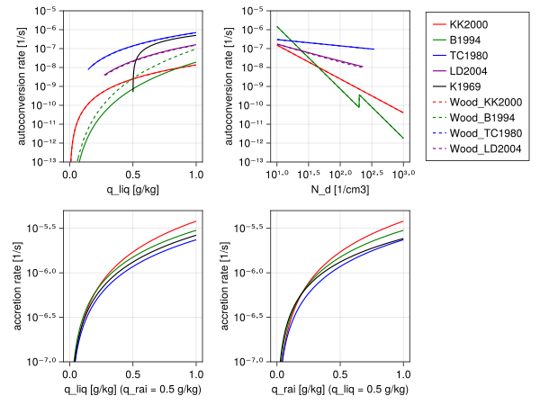

Microphysics 2M
The Microphysics2M.jl module provides 2-moment bulk parameterization of autoconversion and accretion rates. Rain autoconversion defines the rate of transfer form cloud liquid water to rain water due to collisions between cloud droplets. Rain accretion defines the rate of transfer from cloud liquid water to rain water due to collisions between cloud droplets and rain drops. The rates are implemented after Table 1 from R. Wood (2005) and are based on the works of M. Khairoutdinov, Y. Kogan (2000), K.D. Beheng (1994), G.J. Tripoli, W.R. Cotton (1980) and Y. Liu, P.H. Daum (2004) respectively. From the above works: (i) the M. Khairoutdinov, Y. Kogan (2000) parameterisation is based on a fit to drop spectrum resolving scheme and designed to work for stratocumulus topped boundary layers, (ii) the K.D. Beheng (1994) parameterisation is based on a fit to stochastic collection equation, (iii) the G.J. Tripoli, W.R. Cotton (1980) parameterisation is developed for a deep convective case, and (iv) the Y. Liu, P.H. Daum (2004) parameterisation is derived to include the effects of relative dispersion of the cloud droplet size distribution on precipitation formation rates and assumes a modified gamma distribution.
The microphysics variables are expressed as specific humidities [kg/kg]:
q_liq- cloud water specific humidity,q_rai- rain specific humidity.
The default values of free parameters are defined in CLIMAParameters and can be overwritten using the toml files.
Autoconversion
Khairoutdinov and Kogan (2000)
\[\begin{equation} \left. \frac{d \, q_{rai}}{dt} \right|_{acnv} = A \; q_{liq}^a \; N_d^b \; \rho^c \end{equation}\]
where:
- $q_{liq}$ is the cloud liquid water specific humidity,
- $N_d$ is the cloud droplet concentration,
- $\rho$ is the air density,
and the default free parameter values are:
| symbol | default value |
|---|---|
| $A$ | $7.42 \times 10^{13}$ |
| $a$ | $2.47$ |
| $b$ | $-1.79$ |
| $c$ | $-1.47$ |
Beheng (1994)
\[\begin{equation} \left. \frac{d \, q_{rai}}{dt} \right|_{acnv} = \frac{C \; d^a \; (q_{liq} \rho)^b \; N_d^c}{\rho} \end{equation}\]
where:
- $q_{liq}$ is the cloud liquid water specific humidity,
- $N_d$ is the cloud droplet number concentration,
and the default free parameter values are:
| symbol | default value |
|---|---|
| $C$ | $3 \times 10^{34}$ |
| $a$ | $-1.7$ |
| $b$ | $4.7$ |
| $c$ | $-3.3$ |
| $d$ | $9.9$ for $N_d < 200 cm^{-3}$, $3.9$ for $N_d > 200 cm ^{-3}$ |
Tripoli and Cotton (1980)
\[\begin{equation} \left. \frac{d \, q_{rai}}{dt} \right|_{acnv} = D \; q_{liq}^a \; N_d^b \; \mathrm{H}(q_{liq} - q_{liq\_threshold}) \end{equation}\]
where:
- $q_{liq}$ is the cloud liquid water specific humidity,
- $q_{liq_threshold}$ is the cloud liquid to rain water threshold,
- $N_d$ is the cloud droplet number concentration,
- $\mathrm{H}(x)$ is the Heaviside step function.
The cloud liquid to rain water autoconversion threshold is defined assuming spherical liquid water drops of radius equal to $7 \mu m$:
\[\begin{equation} q_{liq\_threshold} = \frac{4}{3} \pi \rho_w N_d r_{cm}^3 \end{equation}\]
where:
- $\rho_w$ is the liquid water density,
and the default free parameter values are:
| symbol | default value |
|---|---|
| $D$ | $3268$ |
| $a$ | $\frac{7}{3}$ |
| $b$ | $\frac{-1}{3}$ |
| $r_{cm}$ | $7 \times 10^{-6} m$ |
Liu and Daum (2004)
\[\begin{equation} \left. \frac{d \, q_{rai}}{dt} \right|_{acnv} = \frac{E \; (q_{liq} \; \rho)^3 \; \mathrm{H}(R_6 - R_{6C})}{N_d \; \rho} \end{equation}\]
where:
- $q_{liq}$ is the cloud liquid water specific humidity,
- $N_d$ is the cloud droplet number concentration,
- $\rho$ is the air density.
The parameterisation is formulated using mean volume radius $r_{vol}$ expressed in $\mu m$ which we compute as
\[\begin{equation} r_{vol} = \left(\frac{\rho q_{liq}}{4/3 \pi \; \rho_w \; N_d}\right)^{1/3} 10^6 \end{equation}\]
where:
- $\rho_w$ is the liquid water density.
Then the $R_6$ and $R_{6C}$ are defined as
- $R_6 = \beta_6 \; r_{vol}$
- $R_{6C} = \frac{R_{C0}}{(q_{liq} \rho)^{1/6} R_6^{1/2}}$
- $\beta_6 = \left( \frac{r_{vol} + 3}{r_{vol}} \right)^{1/3}$
- $E = E_0 \beta_6^6$
| symbol | default value |
|---|---|
| $R_{C0}$ | $7.5$ |
| $E_0$ | $1.08 \times 10^{10}$ |
Accretion
Khairoutdinov and Kogan (2000)
\[\begin{equation} \left. \frac{d \, q_{rai}}{dt} \right|_{accr} = A \; (q_{liq} q_{rai})^a \; \rho^b \end{equation}\]
where:
- $q_{liq}$ is the cloud liquid water specific humidity,
- $q_{rai}$ is the rain water specific humidity,
- $\rho$ is the air density,
and the default free parameter values are:
| symbol | default value |
|---|---|
| $A$ | $67$ |
| $a$ | $1.15$ |
| $b$ | $-1.3$ |
Beheng (1994)
\[\begin{equation} \left. \frac{d \, q_{rai}}{dt} \right|_{accr} = A \; q_{liq} \; q_{rai} \; \rho \end{equation}\]
where:
- $q_{liq}$ is the cloud liquid water specific humidity,
- $q_{rai}$ is the rain specific humidity,
- $\rho$ is the air density,
and the default free parameter values are:
| symbol | default value |
|---|---|
| $A$ | $6$ |
Tripoli and Cotton (1980)
\[\begin{equation} \left. \frac{d \, q_{rai}}{dt} \right|_{accr} = A \; q_{liq} \; q_{rai} \end{equation}\]
where:
- $q_{liq}$ is cloud liquid water specific humidity
- $q_{rai}$ is rain specific humidity
and the default free parameter values are:
| symbol | default value |
|---|---|
| $A$ | $4.7$ |
Example figures
using CairoMakie
CairoMakie.activate!(type = "svg")
import CloudMicrophysics
import CLIMAParameters
const CMT = CloudMicrophysics.CommonTypes
const CM1 = CloudMicrophysics.Microphysics1M
const CM2 = CloudMicrophysics.Microphysics2M
const CP = CLIMAParameters
const CMP = CloudMicrophysics.Parameters
include(joinpath(pkgdir(CloudMicrophysics), "test", "create_parameters.jl"))
FT = Float64
toml_dict = CP.create_toml_dict(FT; dict_type = "alias")
const param_set = cloud_microphysics_parameters(toml_dict)
thermo_params = CMP.thermodynamics_params(param_set)
const liquid = CMT.LiquidType()
const rain = CMT.RainType()
include(joinpath(pkgdir(CloudMicrophysics), "docs", "src", "Wooddata.jl"))
# Example values
q_liq_range = range(1e-8, stop=1e-3, length=1000)
q_rai_range = range(1e-8, stop=1e-3, length=1000)
N_d_range = range(1e7, stop=1e9, length=1000)
q_liq = 5e-4
q_rai = 5e-4
ρ_air = 1.0 # kg m^-3
q_liq_KK2000 = [CM2.conv_q_liq_to_q_rai_KK2000(param_set, q_liq, ρ_air, N_d = 1e8) for q_liq in q_liq_range]
q_liq_B1994 = [CM2.conv_q_liq_to_q_rai_B1994(param_set, q_liq, ρ_air, N_d = 1e8) for q_liq in q_liq_range]
q_liq_TC1980 = [CM2.conv_q_liq_to_q_rai_TC1980(param_set, q_liq, ρ_air, N_d = 1e8) for q_liq in q_liq_range]
q_liq_LD2004 = [CM2.conv_q_liq_to_q_rai_LD2004(param_set, q_liq, ρ_air, N_d = 1e8) for q_liq in q_liq_range]
q_liq_K1969 = [CM1.conv_q_liq_to_q_rai(param_set, q_liq) for q_liq in q_liq_range]
N_d_KK2000 = [CM2.conv_q_liq_to_q_rai_KK2000(param_set, 5e-4, ρ_air, N_d = N_d) for N_d in N_d_range]
N_d_B1994 = [CM2.conv_q_liq_to_q_rai_B1994(param_set, 5e-4, ρ_air, N_d = N_d) for N_d in N_d_range]
N_d_TC1980 = [CM2.conv_q_liq_to_q_rai_TC1980(param_set, 5e-4, ρ_air, N_d = N_d) for N_d in N_d_range]
N_d_LD2004 = [CM2.conv_q_liq_to_q_rai_LD2004(param_set, 5e-4, ρ_air, N_d = N_d) for N_d in N_d_range]
accKK2000_q_liq = [CM2.accretion_KK2000(param_set, q_liq, q_rai, ρ_air) for q_liq in q_liq_range]
accB1994_q_liq = [CM2.accretion_B1994(param_set, q_liq, q_rai, ρ_air) for q_liq in q_liq_range]
accTC1980_q_liq = [CM2.accretion_TC1980(param_set, q_liq, q_rai) for q_liq in q_liq_range]
accK1969_q_liq = [CM1.accretion(param_set, liquid, rain, q_liq, q_rai, ρ_air) for q_liq in q_liq_range]
accKK2000_q_rai = [CM2.accretion_KK2000(param_set, q_liq, q_rai, ρ_air) for q_rai in q_rai_range]
accB1994_q_rai = [CM2.accretion_B1994(param_set, q_liq, q_rai, ρ_air) for q_rai in q_rai_range]
accTC1980_q_rai = [CM2.accretion_TC1980(param_set, q_liq, q_rai) for q_rai in q_rai_range]
accK1969_q_rai = [CM1.accretion(param_set, liquid, rain, q_liq, q_rai, ρ_air) for q_rai in q_rai_range]
fig = Figure()
ax1 = Axis(fig[1, 1]; yscale = log10)
ax2 = Axis(fig[1, 2]; xscale = log10, yscale = log10)
ax3 = Axis(fig[2, 1]; yscale = log10)
ax4 = Axis(fig[2, 2]; yscale = log10)
ylims!(ax1, [1e-13, 1e-5])
ylims!(ax2, [1e-13, 1e-5])
ylims!(ax3, [1e-7, 5e-6])
ylims!(ax4, [1e-7, 5e-6])
fig = Figure()
ax1 = Axis(fig[1, 1]; yscale = log10)
ax2 = Axis(fig[1, 2]; xscale = log10, yscale = log10)
ax3 = Axis(fig[2, 1]; yscale = log10)
ax4 = Axis(fig[2, 2]; yscale = log10)
ylims!(ax1, [1e-13, 1e-5])
ylims!(ax2, [1e-13, 1e-5])
ylims!(ax3, [1e-7, 5e-6])
ylims!(ax4, [1e-7, 5e-6])
l1 = lines!(ax1, q_liq_range * 1e3, q_liq_KK2000, color = :red)
l2 = lines!(ax1, q_liq_range * 1e3, q_liq_B1994, color = :green)
l3 = lines!(ax1, q_liq_range * 1e3, q_liq_TC1980, color = :blue)
l4 = lines!(ax1, q_liq_range * 1e3, q_liq_LD2004, color = :purple)
l5 = lines!(ax1, q_liq_range * 1e3, q_liq_K1969, color = :black)
l6 = lines!(ax1, KK2000_x_q_liq, KK2000_y_q_liq, color = :red, linestyle = :dash)
l7 = lines!(ax1, B1994_x_q_liq, B1994_y_q_liq, color = :green, linestyle = :dash)
l8 = lines!(ax1, TC1980_x_q_liq, TC1980_y_q_liq, color = :blue, linestyle = :dash)
l9 = lines!(ax1, LD2004_x_q_liq, LD2004_y_q_liq, color = :purple, linestyle = :dash)
l10 = lines!(ax2, N_d_range * 1e-6, N_d_KK2000, color = :red)
l11 = lines!(ax2, N_d_range * 1e-6, N_d_B1994, color = :green)
l12 = lines!(ax2, N_d_range * 1e-6, N_d_TC1980, color = :blue)
l13 = lines!(ax2, N_d_range * 1e-6, N_d_LD2004, color = :purple)
l14 = lines!(ax2, KK2000_x_N_d, KK2000_y_N_d, color = :red, linestyle = :dash)
l15 = lines!(ax2, B1994_x_N_d, B1994_y_N_d, color = :green, linestyle = :dash)
l16 = lines!(ax2, TC1980_x_N_d, TC1980_y_N_d, color = :blue, linestyle = :dash)
l17 = lines!(ax2, LD2004_x_N_d, LD2004_y_N_d, color = :purple, linestyle = :dash)
l18 = lines!(ax3, q_liq_range * 1e3, accKK2000_q_liq, color = :red)
l19 = lines!(ax3, q_liq_range * 1e3, accB1994_q_liq, color = :green)
l20 = lines!(ax3, q_liq_range * 1e3, accTC1980_q_liq, color = :blue)
l21 = lines!(ax3, q_liq_range * 1e3, accK1969_q_liq, color = :black)
l22 = lines!(ax4, q_rai_range * 1e3, accKK2000_q_rai, color = :red)
l23 = lines!(ax4, q_rai_range * 1e3, accB1994_q_rai, color = :green)
l24 = lines!(ax4, q_rai_range * 1e3, accTC1980_q_rai, color = :blue)
l25 = lines!(ax4, q_rai_range * 1e3, accK1969_q_rai, color = :black)
ax1.xlabel = "q_liq [g/kg]"
ax1.ylabel = "autoconversion rate [1/s]"
ax2.xlabel = "N_d [1/cm3]"
ax2.ylabel = "autoconversion rate [1/s]"
ax3.xlabel = "q_liq [g/kg] (q_rai = 0.5 g/kg)"
ax3.ylabel = "accretion rate [1/s]"
ax4.xlabel = "q_rai [g/kg] (q_liq = 0.5 g/kg)"
ax4.ylabel = "accretion rate [1/s]"
Legend(
fig[1, 3],
[l1, l2, l3, l4, l5, l6, l7, l8, l9],
["KK2000", "B1994", "TC1980", "LD2004", "K1969", "Wood_KK2000", "Wood_B1994", "Wood_TC1980", "Wood_LD2004"]
)
save("Autoconversion_accretion.svg", fig)